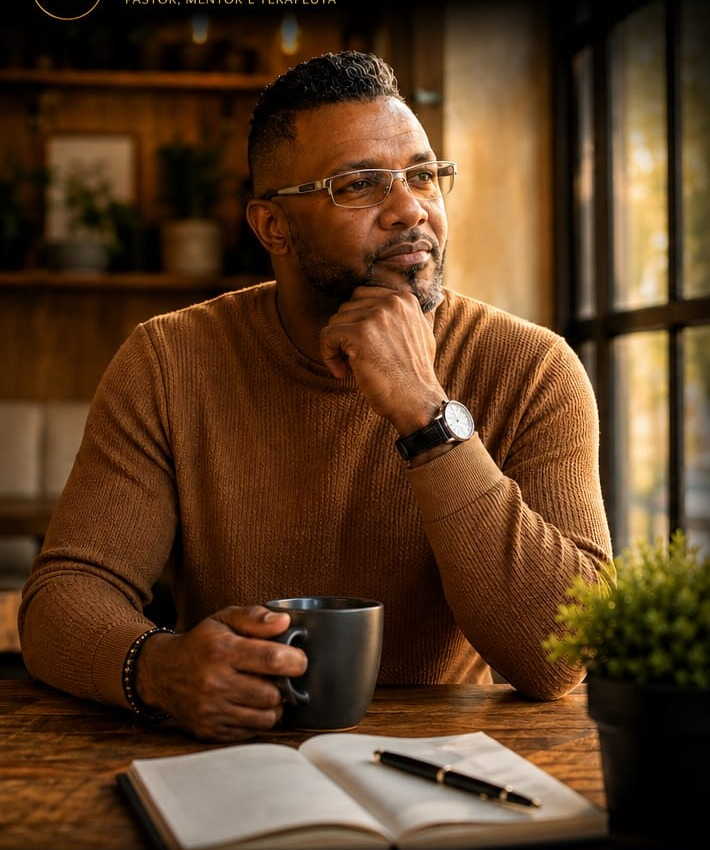

♧
Neurociência
Entenda como o cérebro registra experiências e como é possível desenvolver novos caminhos.
Um caminho que integra princípios da neurociência, Programação Neurolinguística (PNL), desenvolvimento humano e fundamentos cristãos para ajudar você a compreender sua história, restaurar sua identidade e construir um novo capítulo.
O Método Além das Dores reúne diferentes perspectivas para apoiar uma jornada de autoconhecimento, fortalecimento e mudança.
Entenda como o cérebro registra experiências e como é possível desenvolver novos caminhos.
Trabalhe crenças limitantes e explore novas possibilidades por meio de estratégias práticas.
Princípios cristãos voltados à identidade, esperança, perdão e propósito.
Um convite para reconhecer correntes emocionais e buscar uma vida com mais liberdade.
Um espaço de escuta e reflexão para quem deseja compreender o que viveu e encontrar novas formas de seguir.

Criador do Método Além das Dores.
Há mais de uma década, dedico minha vida a ajudar pessoas que carregam traumas, culpas, rejeições, ansiedade, medos e feridas emocionais.
Ao longo dessa caminhada, compreendi que muitas pessoas não precisam apenas de conselhos: precisam ser compreendidas.
Foi dessa convicção que nasceu o Método Além das Dores, uma metodologia que integra princípios da neurociência, Programação Neurolinguística (PNL), cura interior e fundamentos cristãos para conduzir pessoas da dor à transformação.
Meu propósito é ajudar você a compreender sua história, restaurar sua identidade e escrever um novo capítulo da sua vida.
Vamos conversar? →Um caminho estruturado, com espaço para acolher sua história, compreender padrões e construir novas possibilidades.
Você será ouvido com empatia e respeito. Criamos um espaço seguro para que possa se abrir sem julgamentos.
Entendemos sua história e identificamos bloqueios, padrões e crenças que podem manter você preso a ciclos de sofrimento.
Investigamos as origens das dificuldades para ampliar a compreensão sobre como e por que certas dores se formaram.
Trabalhamos novas perspectivas para transformar crenças limitantes e construir formas mais saudáveis de pensar, sentir e agir.
Definimos passos práticos e personalizados para apoiar mudanças reais, consistentes e alinhadas à sua vida.
Você fortalece sua autonomia para tomar decisões com mais clareza, propósito e conexão com a pessoa que deseja ser.
Conheça o método, compartilhe suas dúvidas e descubra se essa jornada faz sentido para o momento que você está vivendo.
Quero agendar minha conversa →Sua transformação começa com uma decisão. Entre em contato para saber mais sobre o Método Além das Dores e as possibilidades de atendimento.